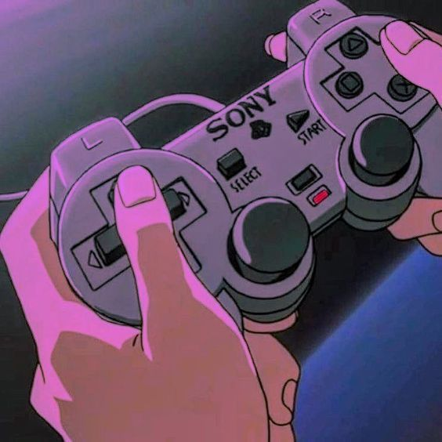

I've always loved video games. I have been playing video games for all my life like i used to play them when i couldn't even talk properly. We used to have a pc and i remember playing a spiderman game on it and i used to watch my sisters play. When i was like 8 or 10 i honestly don't remember, my dad got me a psp. Which opened a whole new world to me as a kid i would always play spend all my time playing it while my sister's did my homework. It used to have a "GTA LCS", "God of War Chaines of Olympus", "Crash tag team racing". I would sit in school and daydream about going home and playing them, i would get excited to see what adventure these little games will me make me go through. I like games with stories and an ending, i dont like any of the competitive games, for me games are liek one of the most complicated forms of art humans have ever come up with, it blends storytelling, music, visuals, design, etc. and i think competitive games aren't a good representation of what video games are and can be.
